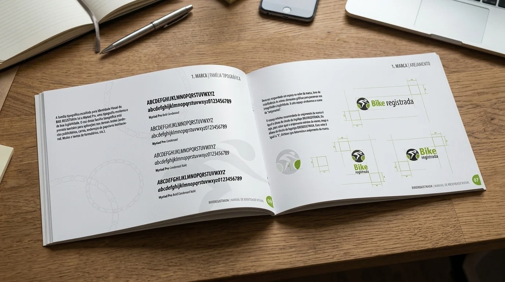
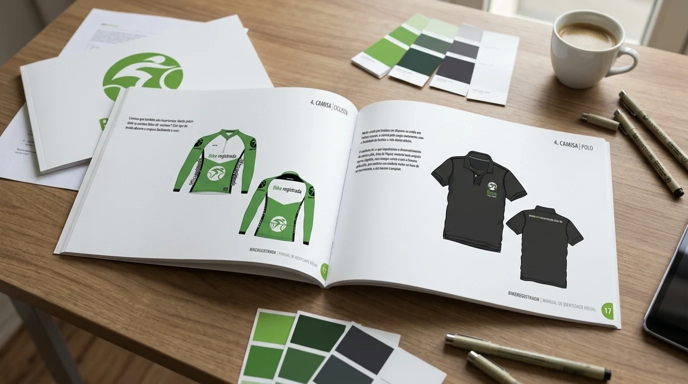
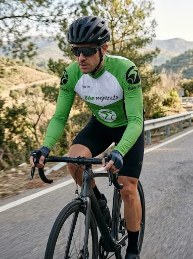
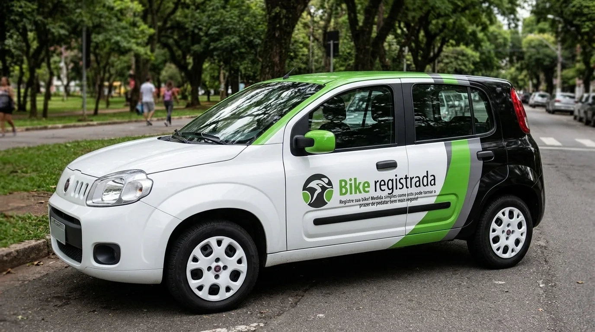
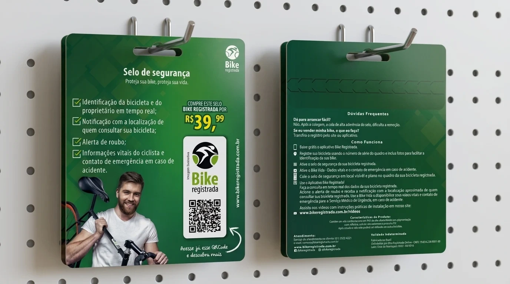

Identidade em
movimento.
Identidade visual completa para a BikeRegistrada. Símbolo, assinatura e uma linguagem em verde, preto e branco conectam o manual da marca ao vestuário, ao veículo e à apresentação do selo de segurança.

A identidade reunida na capa e nas páginas do manual.
Uma assinatura
ligada ao ciclismo.
O símbolo circular traz a figura de um ciclista estilizado. Na assinatura, a palavra Bike ganha destaque em verde e em um peso mais forte, enquanto registrada completa o nome com outro ritmo tipográfico.
O verde, o preto e o branco organizam a linguagem visual. Curvas ampliadas e elementos gráficos de corrente de bicicleta acompanham a apresentação do manual, conectando a assinatura ao universo da marca.

As diretrizes orientam a composição das diferentes assinaturas.
Da estrutura da marca
ao desenho das peças.
O manual apresenta a família Myriad Pro em versões condensadas, com variações de peso e inclinação. Os diagramas de área de proteção acompanham as composições horizontal e vertical da assinatura.
No vestuário, o sistema se desdobra em uma camisa de ciclismo verde e branca e em uma polo escura. A assinatura alterna posições e escalas para acompanhar a frente, as costas e as mangas das peças.

Vistas da camisa de ciclismo e da polo.

Visualização da marca aplicada ao vestuário de ciclismo.
A marca
ganha a rua.
A aplicação no veículo amplia as faixas curvas em verde, cinza e preto pela lateral e pela traseira. A assinatura ocupa a área clara das portas, mantendo o símbolo e o nome em conjunto.
A mudança de superfície preserva a relação entre as cores e os elementos da identidade, levando a mesma linguagem do manual a uma composição de maior escala.

Assinatura e faixas gráficas em outra escala.
Informação também
faz parte da identidade.
A embalagem do selo reúne marca, mensagens e orientações de uso em frente e verso. O verde estabelece a base da peça, enquanto a tipografia e os blocos de informação organizam a apresentação do produto.
A assinatura aparece em versão compacta e acompanha a representação do selo e do QR code. A composição estende o sistema de identidade à comunicação no ponto de venda.

Frente e verso da apresentação do produto.